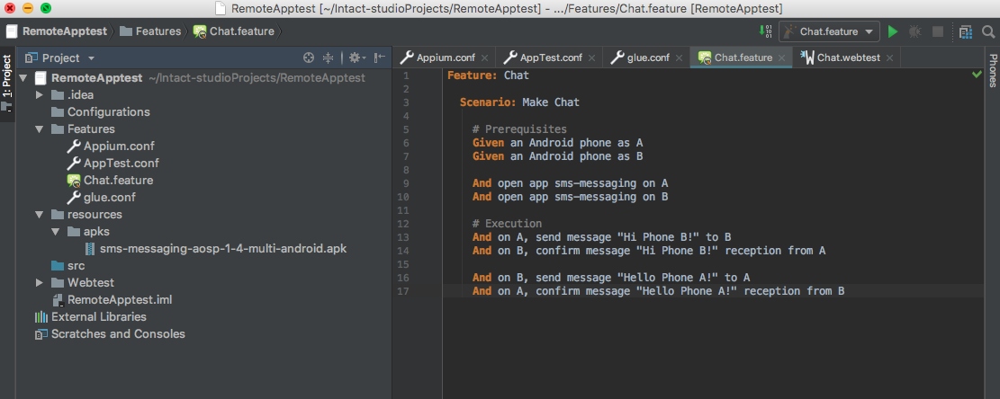
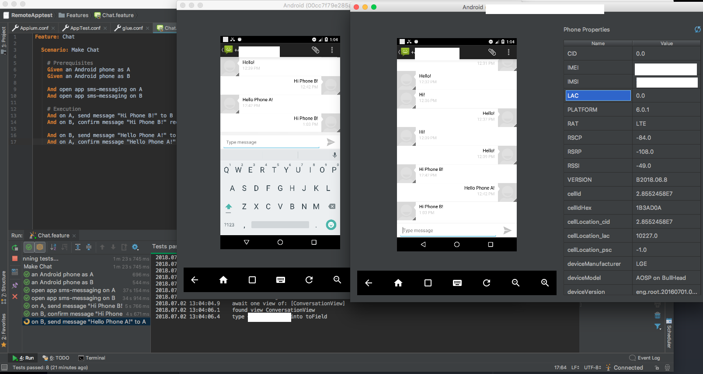
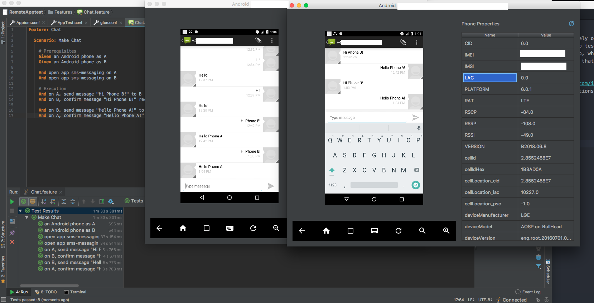

Remote Apptest with INTACT
We extended INTACT’s functionality by providing a remote Apptest feature. Now apps can be automated and tested remotely on devices connected to remote phone services. For example, phones located in Germany can perform Apptests from Austria. This is especially useful when the need to test phones located in a certain country or connected to a specific network arise. The introduction of remote Apptest coincides with our new INTACT Phone Plugin, which allows users to access all devices within their project so that they can view screens and access phone properties from within INTACT Studio. This means that someone executing a test can see what is happening on the phone in real time.
Writing and Executing Apptests
Writing and executing remote Apptests is exactly the same as it was before: Tests are constructed using our Webtest language, which allows users to control an apps behaviour by defining selectors, such as XPaths, CSS and className, and defining what actions to perform on them.
To illustrate what happens when executing a remote Apptest, we created a simple scenario using the Android SMS messaging app:

If you would like to try out this test yourself, you can find the Feature File as well as configuration files and the Webtest File in Example Apptest Configuration and Webtest File
Note: For executing test cases that test a phone’s SMS capabilities, you can use INTACT’s built-in SMS Compound Step. Although the example we’re using looks like a phone’s basic SMS feature, it is actually a messenging app.
Viewing a Remote Apptest from INTACT Studio
Clicking the Phones tab on the right side of the INTACT Studio editor window allows us to select and view the phones that are being used by INTACT. Even though the phones aren’t in front of us, we can watch and confirm that they are behaving the way that they should. You can even use the Phone Plugin to remotely click, select or interact with the device while the test case is running – although this isn’t recommended, since it could interfere with the test case itself.
Now we can see Phone A (the phone on the left) has sent the message Hi Phone B!, which Phone B (the phone on the right):

Now Phone B will send its reply, Hello Phone A! back to Phone A:

Conclusion
In this article, we showed how a remotely-executed Apptest can look. Although we used a simple scenario, Apptest can be used to automate complex behaviours in areas like Internet of Things, customer service portals, and even games. By introducing the ability to execute Apptests remotely, as well as the Phone Plugin that lets users access a device’s screen from INTACT Studio, testing applications is easier and more transparent than ever before!
Would you like to find out more about remote Apptest? Contact us at office@qitasc.com to find out more!